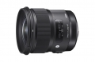
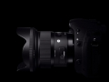
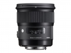

器材库 > 35mm画幅AF定焦镜头 > 24/1.4 DG HSM Art

详细规格
发布日期
2015-02-10
厂家推荐价格
127,000.00 （日元）
焦距
24mm
最大光圈
f/1.4
最小光圈
f/16
镜头结构
15片/11组
非球面镜片
2片
光圈叶片
9片
最近对焦距离
25cm
最大放大倍率
1：5.3倍
滤镜口径
77mm
镜头卡口
Canon EF, Nikon AF, Sigma SA
防抖
否
颜色
黑色
尺寸
85×90.2mm
重量
665g
浮世君2015-04-09 22:214.67 分
操作性 5.00耐用性 4.50性价比 5.00解像力 5.00色彩还原 4.00机械结构 4.50
ez82015-04-08 14:115 分
操作性 5.00耐用性 5.00性价比 5.00解像力 5.00色彩还原 5.00机械结构 5.00
产品图 / 样片

